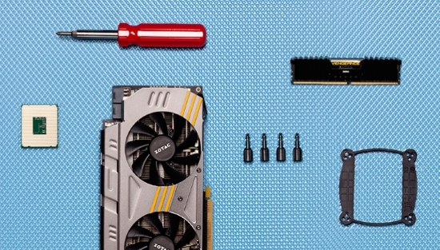
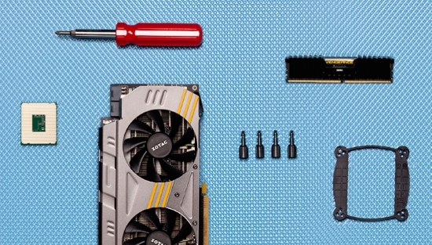

Choosing The Components
The most difficult and time-consuming part of the PC-building process happens long before you start looking for the screwdriver. You can't even start thinking about assembling the individual components until you buy them—and that means doing a lot of investigating into the options (of which there are thousands) and, believe it or not, some serious soul-searching.
-
 

Computer Components.
The first, and most important, thing to consider is: What do you want your PC to do? Are you looking for a really inexpensive system to put in the kids' room? Do you want a squat, console-like desktop that will fit right next to the TV that you can use for streaming media, or maybe as a Steam Machine? Is a dedicated work PC for your home office the goal? Or do you want the biggest, baddest build that can play the hottest new games without breaking a sweat?
We can't answer this question for you. But once you've reached a decision, you'll have a better idea of what you need to buy and how much money you'll have to spend. And then you can get on to the actual shopping.
The nuances of what components do, and how to best get them to serve your needs, is beyond the scope of this article. But the descriptions below of their functions and what you need to look for when shopping should give you a solid of idea of where to start in collecting all the parts you'll need for your PC.
- Index
- Step One: Choosing Your Processor
- Step Two: Choosing Your Motherboard
- Step Three: Choosing Your Graphics Card
- Step Four: Choosing Your RAM
- Step Five: Choosing Your Storage
- Step Six: Choosing Your Power Supply
- Step Seven: Choosing Your Case
- Step Eight: Other Components
^ Step One: Choosing Your Processor
Start with the central processing unit (CPU), the "brain" of the computer that, well, processes all the instructions it receives from the software you run and the other components you have installed. Because of the considerable difference it will make in how well you run every program on your PC, paying particular attention to its capabilities is crucial. Here's what to look for:
-

AMD Processor Left and Intel Processor Right.
- Number of cores. Back when every CPU only contained one processing unit, or core, clock speed was the easiest way to measure performance. But practically every processor today is a multicore CPU, and the more cores a chip has, the more it can accomplish at once (if it's supported by the software). Most common are two- (dual-) and four- (quad-)core CPUs, though six- and eight-core CPUs are becoming more visible on the market.
- Number of threads. Most processors today, particularly from Intel, can simultaneously operate two processing threads per core (Intel calls this technology hyperthreading), effectively doubling your core count. Because not every processor supports this, check that yours does if you expect to be running a lot of multithreaded applications.
- Clock speed (operating frequency). This is the frequency at which each core in a CPU runs, or the number of cycles it is able to execute per second. The higher the number, the faster CPU will generally be per core. These days, clock speed is measured in gigahertz (GHz), or billions of cycles per second.
- Cache (L2 or L3). A processor uses memory installed in the chip itself to store and speed up operations before utilizing external system RAM. This on-board memory is stored in one or more caches, which are identified L2 or L3. More powerful processors will be equipped with larger caches.
- Socket type. CPUs come in different sizes, are identified by the kind of socket they plug into. (For example, Intel's most powerful current chips use the third revision of the LGA 2011 socket.) You'll need this information to determine what motherboard to buy (see the next section).
- Manufacturing technology. Every year or two, processors get thinner and more power-efficient. Knowing a chip's manufacturing technology (measured in nanometers, or nm) will give you some insight into its capabilities, but is not strictly necessary.
- Cooler. Most processors come with a fan rated for their specific speed and estimated heat output; unless you're planning to overclock your computer, you probably don't need to buy another fan or liquid cooling system. (And for that reason, we're not going to dwell on the question here.) But if you do decide to buy a separate one, or if you choose a high-end CPU that doesn't come with its own fan, make sure that the cooler you get is designed for the family of processor you have or are planning to buy.
^ Step Two: Choosing Your Motherboard
If the CPU is a computer's brain, the motherboard is its nervous system. Most of your other components will plug into the motherboard, so the one that you use for your build needs to be exactly what you need now, and what you expect to need from it in the future. Here's what to look for:
-
Gigabyte GA-X99-Gaming 5 Motherboard.
- Socket type. A motherboard's socket type must, must, must match that of the CPU you plan to use in it.
- Form factor. Motherboards come in a range of sizes, or form factors, from the tiny Mini ITX to the enormous Extended ATX. For most full-size desktop builds you'll probably want either regular ATX or the somewhat smaller Micro ATX. The form factor you get will dramatically affect both the number of other components you're able to install and what kind of case you're able to install them in (see that section below for more details).
- Memory. Be on the lookout for several different attributes of how your motherboard deals with memory. You need to know the memory type and standard, which are usually listed together. For example, if your motherboard supports DDR4 2133 memory, buy that. (Many motherboard manufacturers certify certain brands of memory for use with their boards; look up the motherboard on the Web to find out what's officially supported.) The number of memory slots tells you how many individual modules, or DIMMs, you can buy; you'll also be informed of the maximum memory supported, or the total amount of all the individual DIMMs taken together (such as 32 or 64GB). You may also see motherboards labeled as tri- or quad-channel, which signifies that you can expect a noticeable performance benefit if you fill the correct number of RAM slots. Note: Many times a motherboard will be listed as supporting a number of memory types with the designation "O.C." after them—this refers to memory that is overclocked. If you don't plan on overclocking your memory (which we don't recommend, unless you're an expert or fearless tweaker), you may safely ignore these numbers.
- Expansion slots. The most common motherboard form factors, ATX and Micro ATX, will have between four and seven PCI Express (PCIe) slots, for adding expansion cards. These may use either the current top-end standard, PCIe 3.0, or the older (and slower) 2.0, with designations based on the size of the slots and the number of PCIe lanes they use. The longest slots are x16, though some that look identical may run at x8 or x4; in addition, there are visibly smaller x1 slots. On a Mini ITX motherboard, however, you should only expect one x16 slot.
- Storage. SATA remains the most common interface for connecting internal storage devices to your motherboard. The newest version of the standard, SATA 3, supports data transfer rates of up to 6Gbps. You may also find some other interfaces; M.2, in which a flash-based storage module plugs directly into a thin slot on your motherboard, is becoming increasingly popular, for example. Regardless, you'll want to have enough of the right kind of ports for whatever storage you want to buy. (Learn more about that in the Storage section, below.)
- Onboard technologies. Just about every motherboard will feature onboard stereo sound and Ethernet, most will include integrated Wi-Fi and/or Bluetooth, and many will also include ports for taking advantage of processors' integrated video capabilities. (You won't find the last on motherboards for higher-end processors, which are designed for use with discrete video cards, and you may ignore these ports on lower-end or midrange motherboards if you plan on installing a standalone video card.) It's worth checking the specs so that you don't forego something you really want.
- Video card support. Think you may want to concoct an ultra-powerful gaming machine with more than one graphics card? Even if you have enough slots to hold multiple cards, you're out of luck if your motherboard isn't designed for use with either Nvidia's SLI technology or AMD's CrossFireX, so verify that first.
^ Step Three: Choosing Your Graphics Card
-
MSI Twin Frozr V.
General purpose applications, gaming, high-definition (HD) content, and professional 3D modeling all pose unique requirements for the graphics subsystem. Typically, power users spring for discrete cards, which you drop into an open expansion slot on your motherboard. Both Intel and AMD are adding increasingly capable graphics engines to their host processors though, so you might not even need to buy a card if your needs are basic enough.
Extreme gaming hardware is specifically designed to drive the most realistic detail settings at very high resolutions. We’ve even seen game demonstrations using three 4K displays configured in panoramic view, a technology that AMD calls Eyefinity and Nvidia dubs Surround.
As you move away from traditional desktop use cases and toward professional workstations cranking on business-class software, AMD's FirePro and Nvidia's Quadro graphics cards become more apropos, mostly because their drivers are optimized for OpenGL performance and validated extensively with the most notable ISVs. OpenGL is a multi-platform application programming interface that software developers use to render graphics, and it's particularly prevalent in the workstation space. Expect to pay a lot more for correspondingly-tuned cards, even though the GPUs under their heat sinks are exactly the same as what you get from the consumer equivalents.
Click the link below to view the article on Toms Hardware which shows the performance of each Graphics Card released back to 1998.
Toms Hardware - Graphics Card Performance Hierarchy Chart
^ Step Four: Choosing Your Ram
-
Various brands of RAM.
There are a ton of options when it comes to system memory. From data rates to latencies to voltages, the number of combinations can become overwhelming. The easiest answer in the debate of what kit to buy sounds deceptively simple: just buy DDR3-1600 modules. All Socket modern processors are designed to support at least this memory speed. It's inexpensive as both 4 and 8 GB sticks, and it’s available in both dual- and quad-channel kits.
In terms of memory quantity, I recommends at least 4 GB for the cheapest Web surfing Windows-based systems. Gamers could probably get by with 4 GB, but we’re more comfortable with the 8 GB that has become the norm in high-performance machines. Few applications push memory needs past that point, though users of memory-intensive programs who also multi-task can occasionally find an excuse to install even more. Users who need more than 8 GB usually know their needs in advance, based on experience with a previous machine.
^ Step Five: Choosing Your Storage
-
OCZ SSD and WD Black HDD.
Choosing internal mass storage once meant deciding between the performance of a solid-state drive (SSD), the capacity of a mechanical hard drive (HDD), or the greater expense of both. But as with system memory, advancements in manufacturing and maturing technology put medium-capacity SSDs within reach for most enthusiasts. We're even seeing 256 GB drives under $100. That SSD might not make processing-bound workloads run faster, but they'll certainly launch quicker, access the data they need more expediently, and respond in a way you simply won't experience with a hard drive.
The flash-based capacity you'll want depends on what you do with your PC. A Windows installation rarely exceeds 32 GB without additional programs installed, even after many months of collecting temp files, cookies, and other "temporary" trash. Popularly-used apps like the Office suite and Adobe's Creative Cloud software can easily consume many times that much space, and games regularly eat up more than 10 GB each all on their own. Most of us could squeeze Windows and essential programs into a 128 GB SSD without much effort, but 256 GB drives are the sweet spot if you're adding a few games, too.
Mechanical storage becomes critical once you start piling on years of pictures, music, and movies. DVD and Blu-ray disc images consume up to 8.4 and 50 GB, respectively. If you love to archive video, your capacity needs will expand very fast this way. Game install packages can be even larger than the games themselves, and those of us with less-than-perfect Internet access are reluctant to delete source data, even when installation finishes.
Though most systems use either one large drive or a combination (a smaller SSD and larger hard drive, for example), other configuration options let you choose between additional performance, more capacity, increased data security, or a combination of these.
^ Step Six: Choosing Your Power Supply
-
Corsair Power Supply TX 750.
Although it doesn't get its fair share of recognition, the power supply is the single most critical component for system stability and longevity. We've seen cheap models literally go up in flames, taking out several key pieces of hardware in the process. Picking an underpowered model might get you crashes or even boot failures. Since low-quality parts often fall short of their specifications, we'll start off with a link to our power supply reviews and a list of reputable units that have surpassed the expectations of our forum experts. You’ll notice that power supplies don’t get updated as often as other parts, because that technology doesn’t progress as quickly. Quality units have “staying power”.
How much capacity your system needs depends on its hardware configuration. Graphics cards are the most power-hungry components in gaming systems, while CPUs take priority if you're using integrated graphics. Several power supply calculators are available on the Web, though some are more up-to-date than others. The good news is that oversized power units can easily sustain undersized systems without damage, though efficiency sometimes drops when the unit is loaded by less than 20% of its rating.
Simple calculators might do the job for basic configurations, but the highest-end graphics cards place higher load bias on +12 V rails (so much so, in fact, that AMD's Radeon R9 295X2 even has a very specific +12 V rail requirement). Most of today's highest-performance power supplies are correspondingly designed to serve up lots of current on the +12 V rail, though cheaper parts occasionally skimp in that specification. Be on the lookout for this as you shop. AMD and Nvidia originally guided customers to the PSUs with enough 12 V amperage through their lists of CrossFire- and SLI-certified supplies. However, 80 PLUS and its efficiency ratings are also popular sources for determining higher-quality products.
Click here to go to the eXtreme Power Supply Calculator.
Toms Hardware has a very good article on this topic click here to view it.
^ Step Seven: Choosing Your Case
Traditional cases follow the size categories below. However, more modern designs tend to stray from those well-defined standards in the name of differentiation. Mid-tower designs, for example, are now found in nearly full-tower scale. To make matters more confusing, they can even be referred to as full towers, even if they lack the drive bays inside that used to define the form factor.
| Traditional Case Sizes | |||||
|---|---|---|---|---|---|
| Type | Full Tower | Mid Tower | Mini Tower | Mini Cube | Desktop |
| Height | 21-24 inches | 17-19 inches | 12-14 inches | 7-9 inches | 3-7 inches |
| Width | 6-8 inches | 6-8 inches | 6-8 inches | 8-9 inches | 14-17 inches |
| 3.5" internal bays | 6-12 | 2-6 | 1-2 | 1-2 | 2-4 |
| Motherboard Form Factor | ATX, EATX | ATX | microATX | mini-ITX | ATX, microATX |
| Card slots | Seven | Seven | Four | Two | 2-7 |
| Power supply | PS/2 or larger | PS/2 | PS/2 or SFX | SFX or TFX | Various |
Full towers were traditionally tall enough to hold two power supplies, though many had a second hard drive rack where you might expect to find the top power supply. The interior space of a full-tower chassis is useful in some configurations; however, most mainstream users (and even most enthusiasts) simply don't have enough hardware to fill it.
ATX mid-towers are usually capable of holding full-sized motherboards, full-sized power supplies, several full-sized optical drives (DVD and Blu-ray burners), and multiple hard drives. Well-designed units like the Cooler Master Storm Enforcer (Image-left) are well-suited for gaming and video enthusiasts, simply because they support a greater number of expansion cards and hard drives than smaller units. A comparison of our current case reviews to models from ten years ago show that good ideas stand the test of time.
-
Different Case Sizes.
MicroATX mini-towers are nearly as versatile as mid-towers in applications ranging from office workhorses to high-end liquid-cooled SLI-powered gaming monsters because of their less-imposing profile and easier trasportability. Mini-towers typically support one or two optical drives and one or two hard drives, and the microATX form factor supports a maximum of four expansion slots. All of those limitations are acceptable for most users.
Mini-ITX cubes typically support a single expansion cards and only the smallest power supplies, though the slightly-oversized Lian Li PC-Q08 above (center) supports larger parts. Relying mostly on integrated features and capabilities, these space-saving enclosures were once only good as office- and productivity-oriented platforms. Now, thanks to more efficient host and graphics processors, we also have access to ultra-compact gaming machines and home theater consoles. Though you'll commonly see these referred to as “small form factor”, the term form factor is better applied to the mini-ITX motherboard found inside. Variations of the cube aesthetic alternatively support ATX and microATX form factors.
Formerly used to raise small CRT monitors up to eye level on flat desks, today’s horizontal desktop cases are mostly restyled for home theater systems. They range from the gaming-themed mini-ITX Raven RVZ01 (pictured bottom-center) to the eight-inch-tall full-ATX pedestals laying on their sides. Many of the slimmer models use special half-height expansion cards, though the model pictured above uses a right-angle adapter (called a riser card) to situate a full-sized graphics card sideways. If expansion is important to you, beware of models that use a custom-sized power supply, as those may not be upgradeable.
^ Step Eight: Other Components
-

Different Cooling Solutions.
It's possible to complete your build and get to gaming with nothing more than the previous-mentioned components (along with a thumb drive for your operating system). The number of downloadable programs has increased to the point that many of our readers never need an optical drive (CD, DVD, BD-ROM). Cases come with mounting screws and usually include cooling fans. Most retail-boxed CPUs have a heat sink and fan. And a majority of motherboards are bundled with cables.
For other enthusiasts, the ability to run old programs or play media is critical. Overclockers, especially, will immediately toss aside whatever thermal solution their multiplier-unlocked CPU came with in favor of something more effective.
Even the most tight-fisted builder should be able to afford a DVD writer, with typical online prices ranging from $20 to 40 on the latest models of many popular brands. Blu-ray writers are more expensive, though not nearly as bad as they once were. Combo drives with Blu-ray read and DVD write capabilities used to fill the pricing gap, but that market shrank as the gap decreased.
Other power users prefer additions like a premium sound cards or TV tuners, though integrated sound is quite good nowadays and Internet-based streaming services make TV cards largely superfluous. Then again, that's what makes the PC so great. You have the freedom to swap parts in and out as your needs change.
The debate over optional or mandatory upgrades heats up when we get to the world of overclocking.
CPU coolers range from tiny devices as small as a 2” cube to enormous liquid-cooled radiator systems. We review the entire range, and think that first-time builders who would eventually like to overclock will have the most success with something that’s easy to install. Depending on your case, that could still give you dual-fan sealed liquid system or big air options.
Gotten this far? Read the next page to learn how to actualy put the parts together.